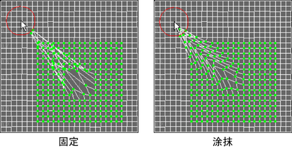

将选定 UV 及其相邻 UV 的位置移动到用户定义的一个缩小的范围。
若要打开“涂抹 UV 工具”(Smudge UV Tool)，请从“UV 编辑器”(UV Editor)菜单中选择。
选择“工具 > 涂抹”(Tools > Smudge) >  时，在“工具设置”(Tool Settings)窗口中将显示以下选项。
时，在“工具设置”(Tool Settings)窗口中将显示以下选项。
涂抹设置(Smudge Settings)
- 效果类型(Effect type)
-
选择 UV 跟随笔刷工具的方式。
- 固定(Fixed)
-
按“UV 涂抹工具”(UV Smudge Tool)笔刷移动的方向移动选定 UV。UV 看起来跟随笔刷或随笔刷移动。该设置移动 UV 的方式与“软修改工具”(Soft Modification Tool)移动顶点的方式类似。
- 涂抹(Smudge)
-
按“UV 涂抹工具”(UV Smudge Tool)笔刷移动的方向拖动或涂抹 UV。

- 衰减类型(Falloff Type)
-
选择 UV 移动随着笔刷移动衰减的方式。
- 指数(Exponential)
-
基于 UV 与“UV 涂抹工具”(UV Smudge Tool)笔刷的距离移动 UV。UV 以指数方式移动得越多，它离笔刷就越近。
- 线性(Linear)
-
基于 UV 与“UV 涂抹工具”(UV Smudge Tool)笔刷的距离移动 UV。UV 以线性方式移动得越多，它离笔刷就越近。
- 恒定(Constant)
-
按“UV 涂抹工具”(UV Smudge Tool)笔刷移动的方向将所有 UV 移动相同的数量。
- 涂抹大小(Smudge Size)
-
设定“UV 涂抹工具”(UV Smudge Tool)笔刷的大小。
在 UV 编辑器的视图中，也可以按 b 并拖动来调整“涂抹工具”(Smudge Tool)笔刷的大小。
- 压力(Pressure)
-
设定涂抹的幅值，并指定“UV 涂抹工具”(UV Smudge Tool)笔刷对选定 UV 影响的程度。
仅当选定的“效果类型”(Effect Type)为“涂抹”时，该选项才可用。
- 鼠标中键启动(Middle Mouse Initiates)
-
如果启用该选项，使用鼠标中键拖动即可涂抹 UV 的布局。如果禁用该选项，通过拖动即可涂抹 UV 的布局。